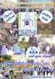
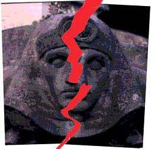
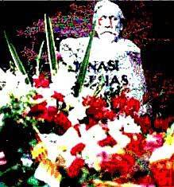
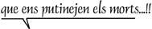

|
el
futur del
CEMENTIRI DE SANT ANDREU |
 |

|
 |
 |
|
|
|
L'arbitrarietat
i la manca de sensibilitat
en l'última divisió en "districtes" del Municipi de
Sant Andreu de Palomar
per part de l'Ajuntament de Barcelona
ha portat a una situació àltament perillosa
pel manteniment d'un dels signes d'identitat que encara no s'han atrevit a
fer desapareixer:
EL CEMENTIRI DE SANT ANDREU DE PALOMAR
|
No
sembla tan negre
després de que el 4t. tanatori de l'actual municipi de Barcelona l'hagin assignat a l'actual 'districte' Sarrià-St. Gervasi segons la premsa del dia 02/11/01 |
|  |
Constituïda
la |
PER ACLARIR
EL FUTUR DEL NOSTRE CEMENTIRI
|
(?)
|
Cartes a l'Alcalde de Barcelona i al Síndic de Greuges de Catalunya
|  |

|
|||
|